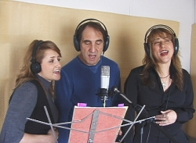
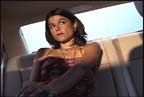
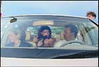
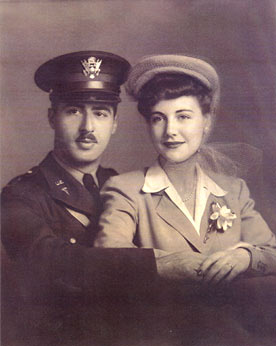
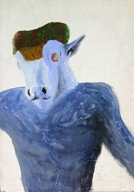

Photos
www.BlueCanyonProductions.com/photos.html
|
(www.BlueCanyonProductions.com)
"Santa Fe's —and therefore the world's—strangest web site. Fascinating sound clips and soul-nourishing content." - Bill Hutchison, staff writer, Santa Fe Reporter (See our Home Page) |
These photos of Jim Terr with Jamie Autumn Bobb (L) and Ursula Coyote (R) from YouTube video, "Do They Have E-Mail in Heaven?", are available at very bottom of this page: 
This recent photo
of BuDDy is available in higher resolution NEAR very bottom of page.
MEDIA
ONLY: Photos
of "BUDDY" may be taken directly
from Buddy's
Old Fashioned Web Site,
The $2.98 Video
Collection page, and "Other"
page.
To
download any photo below, click on the picture
to go to enlargement.
|
||
 1. Randy (J.D. Garfield) tries to talk Anne (Mary Evans) out of kidnapping him. |
 2. The kidnapping plans of Anne (Mary Evans) go drastically awry. (Cow brains courtesy of Familia Mexicana Carniceria.) |
 3. Anne (Mary Evans) wipes blood from her mouth following a shooting in the "movie-within-a-movie" sequence. |
4. Anne (Mary Evans) wipes blood from her mouth following a shooting in the "movie-within-a-movie" sequence. |
 5. Carmela carjacks Anne (Mary Evans) and Randy (J.D. Garfield). |
 6. Jake (Joe Pesce) gets flustered during a hold-up attempt. |
 7. Jake (Joe Pesce) is bewildered by the seduction attempt by Anne (Mary Evans), the woman he's kidnapped. |
 8. Carmela appears profoundly disinterested in being seduced by Randy, the man she's kidnapped. |
 |
 10. BethNommensen and Jim Terr play themselves as crew member and director in the "movie-within-a-movie" sequence. |
|
|


Jim Terr
Hi-res most current
photo (4-07) at bottom of page
Photo
by: Judy Lipsett All Rights Reserved. (To be used by Permission Only) |
Photo
by: Hadley Harper All Rights Reserved. (To be used by Permission Only) |
 Steve Allen and his wife, Jayne Meadows |


| Shingo
Matsushima |
Photo Credit: Photo
Courtesy Blue Canyon Productions. All Rights Reserved.
(To be used by Permission Only)
|

(This is where any good looks may come from.) |

Both
acrylic, above on cardboard approx.18 x 26, 1972; below on canvas approx.
26 x 48, 1970.

Home Products
Phone/Fax Orders Public
Service Opinion
Humor Satire
Songs Other Services Links Contact
Us